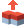

Multi PushPull Tool ¶
{kind=link}
Tip
If you want a uniform size of height in PushPull Tool, enable Snap in Settings > Snap
Multiple polygons are pushed or pulled along a helper arrow
Steps¶
Go to
Multi PushPull Tool.If no selected polygons, select several polygons. Then you can see the
Help arrowin yellow.Click
LMBon any point on theHelper arrow.Drag the mouse in a direction of the the arrow.
If necessary, adjust
Distanceproperty.
Interface¶
LMB DragIt should start on a helper arrow and the mouse should be dragged along it.
ESCExits this tool.
Properties¶
- Select Only Visible
If on, Selects only visible vertices/edges/polygons from a camera. Occluded elements from other polygons will not be selected. This is available only when the game object has MeshCollider component.
- Distance
How long the selected polygons are extruded
- Pushpull Type
Individual Polygon: The selected polygons are extruded in each normal direction of the polygons.Vertex Normal: The selected polygons are extruded in each normal direction of the vertices.Average Normal: The selected polygons are extruded in the average direction of them.X: The selected polygons are extruded in X-axis direction.Y: The selected polygons are extruded in Y-axis direction.Z: The selected polygons are extruded in Z-axis direction.
Note
Since version 2.1.1 Individual type has been renamed to Individual Polygon type and Vertex Normal type has been added.
- Continuous
If off, the boundary edges between the existing side polygons and the new side polygons will be left.
- One Step Size
The size of one step push/pull. This size are set from the grid snap size as default.
- One Step Push
Extrudes the selected polygons back by the one step size.
- One Step Pull
Extrudes the selected polygons forward by the one step size.
{kind=link}
Two polygons are selected and an arrow in the average normal direction of them is displayed.¶
{kind=link}
As PushPull Type is Individual Normal¶
{kind=link}
As PushPull Type is Vertex Normal¶
{kind=link}
As PushPull Type is Average Normal¶
{kind=link}
Three polygons as above can be pushed at once.¶